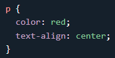
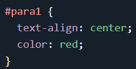
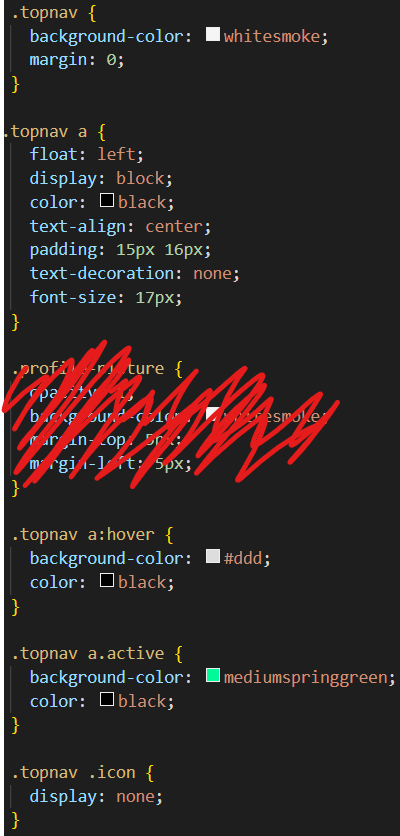
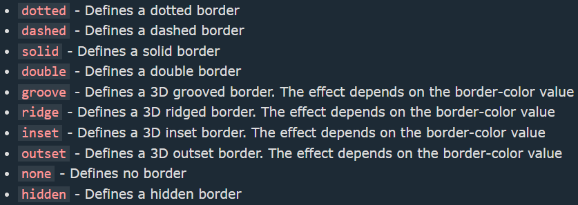
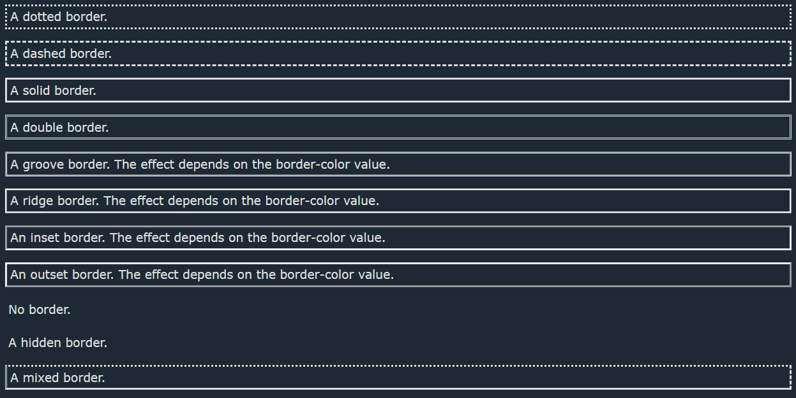

Cascading Style Sheets (CSS)
Denne notatside er lavet ved sammensætning af viden fra både pensum og selvlære
Syntaks for tekst er hvordan hele lortet hænger sammen i en komposition / fuld kommando

Man bruger selectors til, at skabe id's, med et ID kan du lave særlig betingelser for en bestemt kode i dit program.
For at lave en selctor bruger du et #
Farver kan beskrives på mange måder, hvis ikke du kender værdierne på de farver du skal bruge, kan du godt bare skrive dets navn, denne metode har 140 valgmuligheder , men med numre kan du beskrive helt præcis hvordan du vil have din farve til at se ud. Talene kan skrive med mange forskellige systemer, du kan skrive dem i RGB, RGBA, Hexadecimaler, og andre. Her er skrive måderne:
- RGB - rgb(r, g, b), r er mængden af rød (Red), g er mængden af grøn, b er mængden af blå (Blue)
- HEX - #xxyyyy, x er et bogstav og y er et tal
- RGBA - rgba(x, y, z, a) samme som RGB bare med accent (eller opacity)
- HSL - hsl(hue, saturation, lightness), hue er farven beskrevet med 360 grader, saturation er hvor stærk farven er (0 saturation giver hvid, 100 saturation giver den fulde x-farve)
Jeg har (lavet) min navigationsbar sådan her:
Min kode for dropdown-menuen er alt for lang til at være i bukserne.
Den fungere på samme måde som resten af navigationsbaren, udover at den udfolder sig vertikal. Den eneste måde den rent faktisk skilder sig ud fra navigationsbaren er, at navigationsbarens opacitet er absolut (du ser den hele tiden), men dropdown-menuen er som navnet siger, den hopper ned, når du holder musen over den.
!important reglen sørger for, at hvis du har en masse betingelser for et objekt, så kan du overwrite dem alle ved at denne kommando du giver !important bliver mere vigtig end de andre og derfor også prioteret højere end de andre kommandoer
Her kan vi se hvordan den virker:
Man kan lave et objekt i sin kode 2d og/eller 3d responsive, hvilket vil sige, at den reagere på en eller anden fysisk måde, dette kalder man også "at den transformere"
Billeder defineres med mange forskellige former og længder, normalt bruger man px eller % til at bestemme længderne på et objekt, de normale kommandoer til længder er width, height & Depth
Borders kan laves på en masse forskellige måder, for at definere en border skal du bruge border-style
 